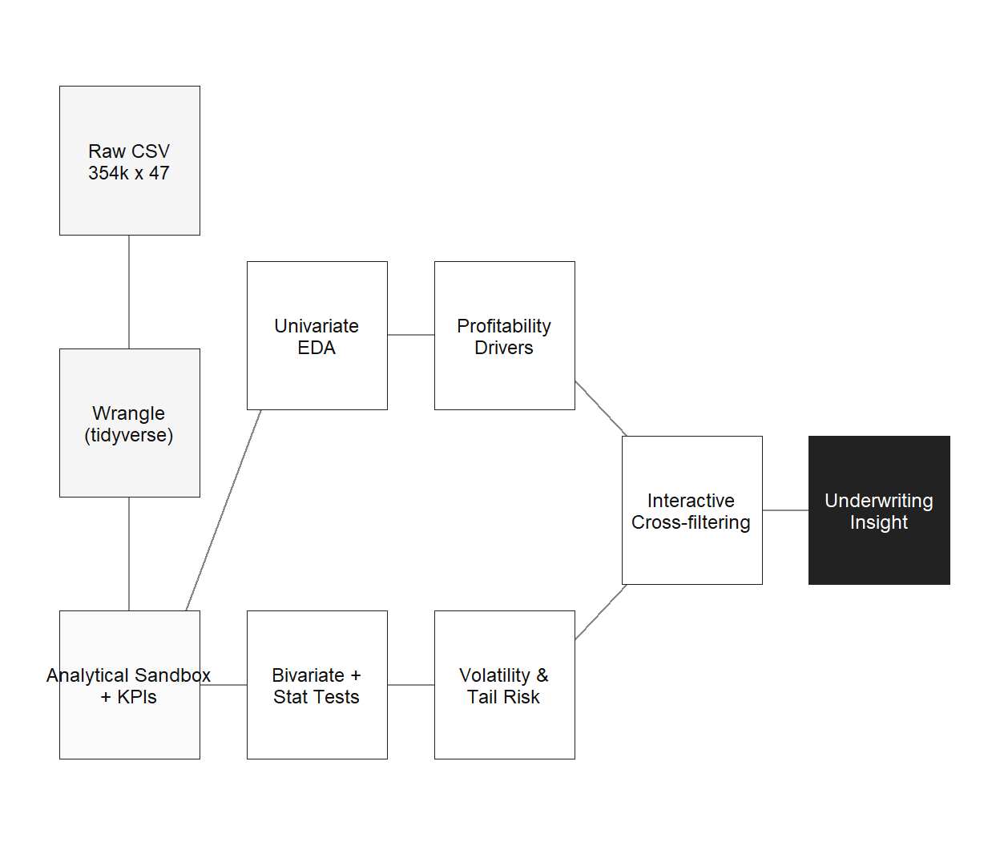
A Visual-Analytics Investigation of a 354k-policy Spanish Motor Book
2026-05-23
Part I. Setup
Part II. Profitability
Part III. Volatility
Part IV. Temporal and interactive
Part V. Synthesis
“Insurers often carry underperforming portfolios where the root causes of poor profitability and high volatility are unknown.”
354,091 Policy-years
70.3% Portfolio Loss Ratio
2022 to 2024 Observation window
47 Variables
The remediation question. A portfolio Loss Ratio of 70.3% looks fine on average, but averages hide a lot of leakage. I want to know where the LR is mis-distributed across product, driver, vehicle and time, and how unstable each pocket is. Both questions get answered visually first, then validated with statistics.
Source. Real-world Spanish motor-insurance dataset, Mendeley Data (link).
Scale. 354,091 policy-year records over 3 calendar years.
Variable families (47 in total)
Derived KPIs. loss_ratio, pure_premium, claim_frequency, severity, a large_loss flag, plus six banded continuous variables for stratified analysis.

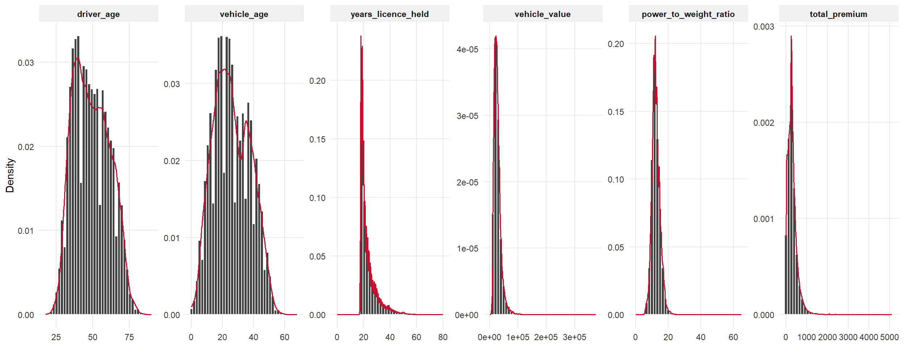
Figure 2
Three shape diagnostics that frame later choices
driver_age is roughly Gaussian with a mean around 49. There is no young-driver hump, which probably means the insurer already screens out new licensees in volume.vehicle_age is bimodal with a long right tail past 50 years. Spain has a real vintage-vehicle subculture and it is built into this book.total_premium and vehicle_value are log-normal, so later LR analyses need log-scale axes or portfolio-weighted ratios. Raw arithmetic means would be dominated by tiny-premium policies.Why histogram plus density together?
The histogram fixes the eye on observed mass. The density overlay in accent red shows the continuous shape without binning artefacts. When they disagree, for example the spike at exactly zero for total_premium, there is usually a data-quality boundary worth a closer look.
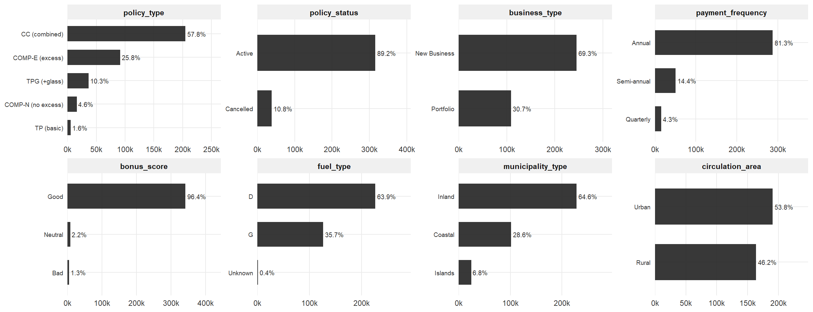
Figure 3
Three severe class imbalances to remember in every bivariate test that follows.
bonus_score is 96.5% Good. policy_status is 89.2% Active. business_type is 69.3% New Business. And the most consequential surprise: COMP-N is only 4.6% of the book, but as I show later it is the single largest profitability risk.
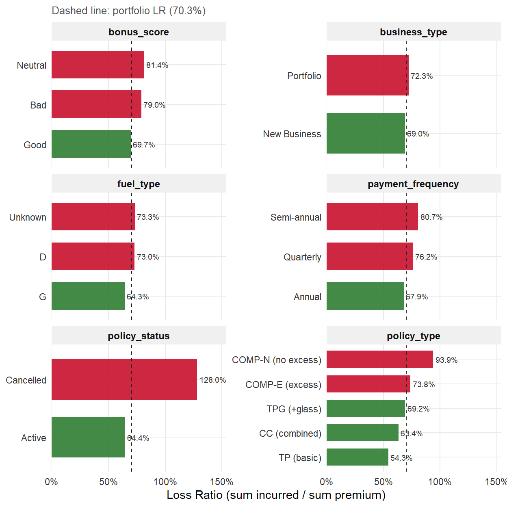
Four findings stand out
policy_type spans 39 pp. TP basic at 54% vs. COMP-N at 94%. The single largest lever for any remediation.
The bonus-malus signal is leaking. LR is non-monotonic: Good 70%, then Bad 79%, then Neutral 81%. The “Neutral” pool looks like a dumping ground for borderline risks the system cannot cleanly classify.
Cancelled policies bleed money. 128% LR against 64% Active. This looks like adverse retention, where claimants disproportionately exit the book and leave losses behind.
Diesel runs 9 pp hotter than gasoline. A pricing or selection gap worth a re-rate study. The next slide validates it statistically.
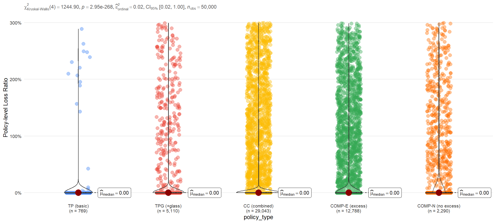
Figure 5
Reading the test. Kruskal-Wallis confirms a highly significant between-group difference (p ≪ 0.001). Pairwise post-hoc Dunn’s tests (only significant pairs displayed) verify that every policy-type pair separates, so the headline ordering on the previous slide is not just a sample-size artefact.
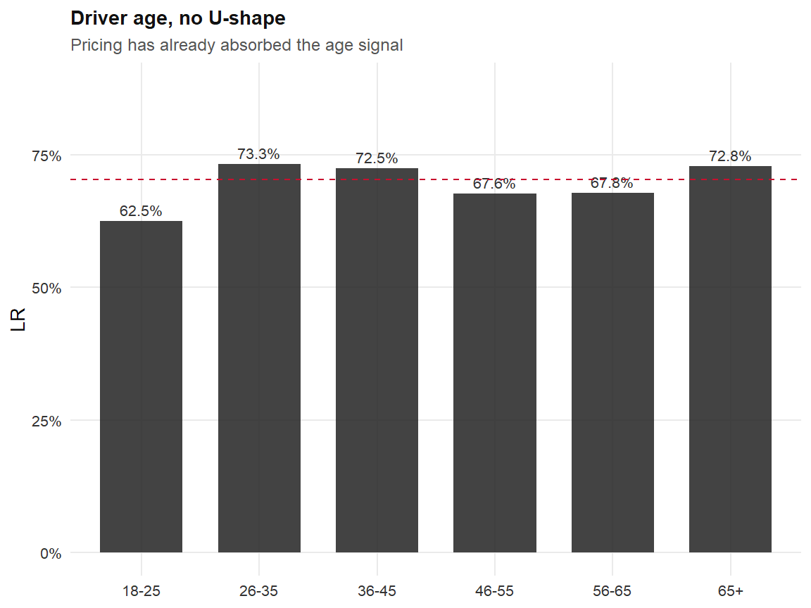
The missing U-shape is a quiet success. A flat 67% to 73% LR across all bands means the rating engine is already loading young and old drivers correctly. Age is not where remediation lives.
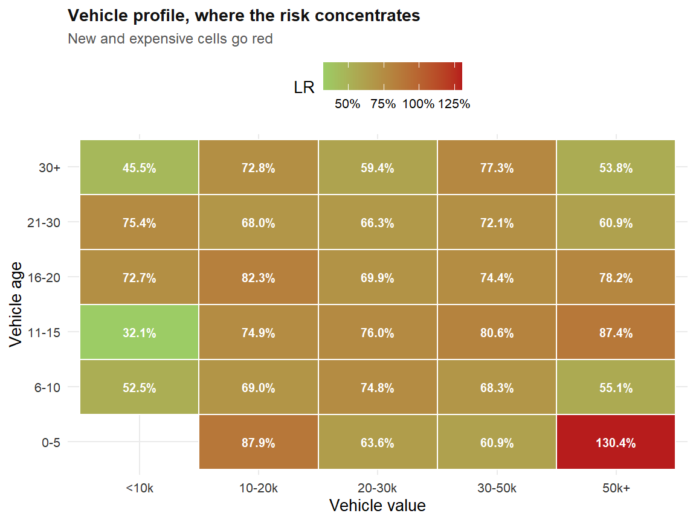
Risk concentrates in the upper-left: new, expensive vehicles. The interaction is non-linear and explains why a one-dimensional vehicle-age tariff under-prices the modern luxury segment.
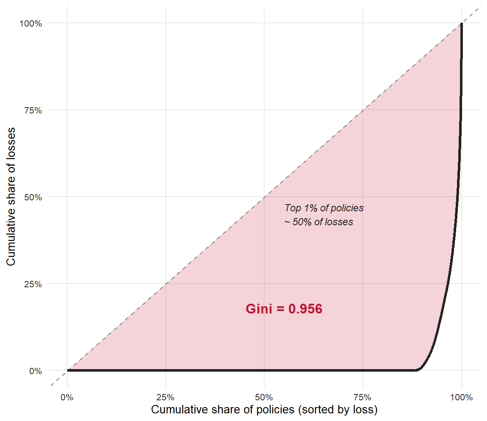
Gini = 0.956
A Gini of 0.95 is very high by P&C standards. A typical auto book sits between 0.85 and 0.92. In plain language, the volatility of this portfolio is basically the volatility of a few hundred policies.
What this means for the playbook
The deterioration in average LR is a body-of-book problem. The volatility of the book is a tail problem. Confusing the two leads to the wrong remediation.
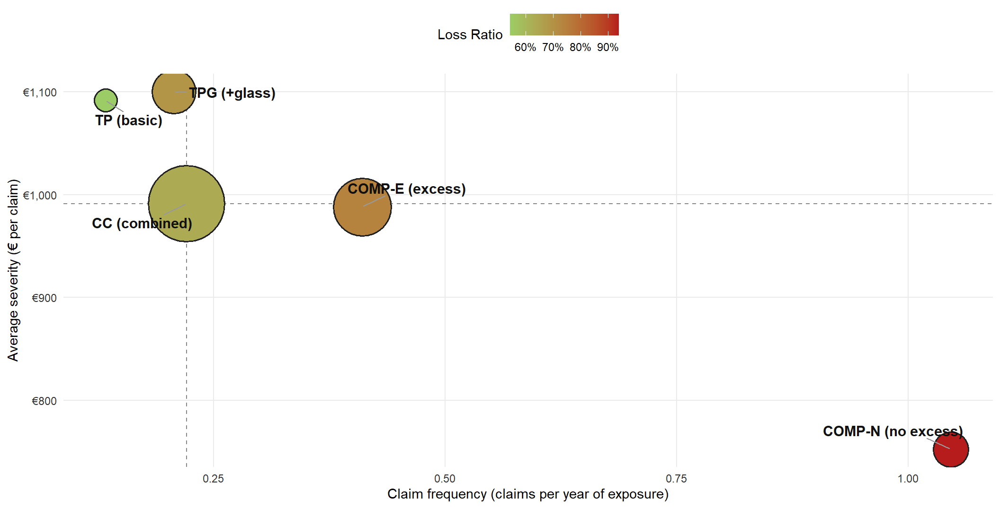
Figure 9
Reading the quadrant. Upper-right is “double trouble”. COMP-N is the only type that claims more often and costs more per claim. TP basic sits in the opposite corner, the safe pocket. CC combined is the volume leader (biggest bubble) and anchors the portfolio’s centre of gravity.
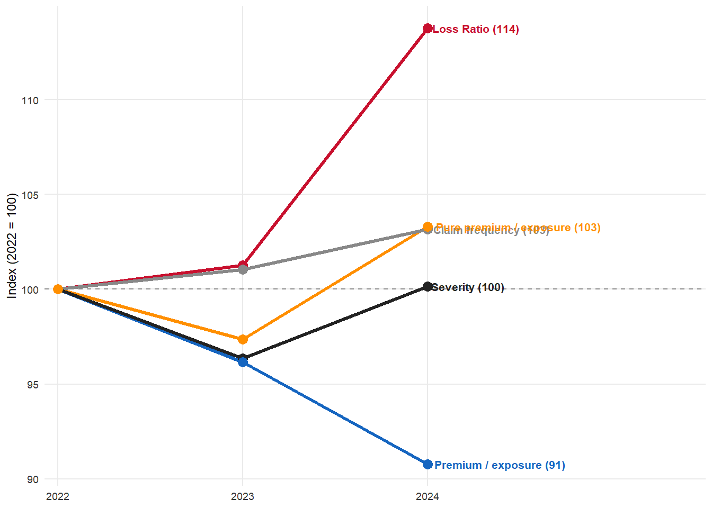
The deterioration is a pricing story, not a loss-cost story.
The 14-point LR climb is overwhelmingly driven by inadequate premium growth, not by claims inflation.
This re-frames the whole remediation playbook, from “tighten claims handling” to “restore pricing discipline”.
Three interaction patterns, three packages
A plotly heatmap of LR by policy_type x bonus_score, faceted by year. Hover any cell to read the exact LR, exposure and incurred. Toggle the year slider to see the deterioration in motion.
A crosstalk plus plotly scatter (premium vs. incurred) paired with a per-type LR box-plot. Drag a rectangle on the scatter and the box-plot recomputes in real time on just the brushed policies. The “see and discover” loop in one widget.
A ggiraph lollipop of LR by top-20 vehicle brands. Hover for tooltip, click to reveal underlying records. Static aesthetics with an interactive payload.
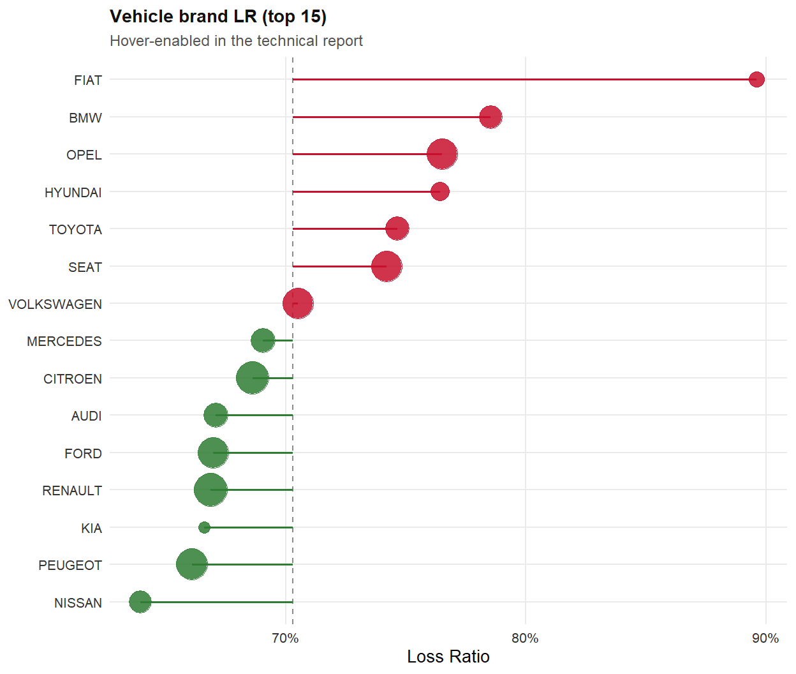
Profitability
Volatility
Next steps
GLM Re-rate on validated drivers
Tail Per-risk u/w limits + XoL
Bonus Split Neutral into Neutral-Up and Down
Monitor Quarterly Premium / Exposure KPI
The one-slide takeaway
The 14-point LR climb is a pricing story, not a claims story. Restore pricing discipline, contain the tail with reinsurance, and re-rate COMP-N first.
Questions?
MENG TINGYU · ISSS608 VISUAL ANALYTICS & APPLICATIONS
Full reproducible technical report available on the coursework webpage.